Candidate List 20250901 Previous Day Next Day Section 1: New Sources (age<1d) Cosmological Afterglow
Section 2: Old (1-5d) sources observed last night placeholder
Section 1: New Afterglow/FBOT Cands Last Night (0)
Section 2: Older Sources Observed Last Night (12)
0. ZTF25abmhxft (FBOT?) [Back to Top] [Share] [Trigger Swift] [Fritz ] [Lasair ]RA, Dec: 279.32002, 32.48839 18h37m16.80s, 32d29m18.21sGalactic (l, b): 61.28367, 16.93386 ext(g-r) = 0.079LegacySurvey: 1 sources in 3 arcsec Closest: d = 0.82 arcsec, 209.0 deg (east of north) photoz=0.08 (68% bounds 0.08, 0.1), type=SER peak abs mag = -19.5 (68% bounds -19.25, -19.81)
1. ZTF25abmniua (Afterglow?) [Back to Top] [Share] [Trigger Swift] [Fritz ] [Lasair ]RA, Dec: 34.87195, 78.78076 2h19m29.27s, 78d46m50.73sGalactic (l, b): 127.29753, 16.66249 ext(g-r) = 0.391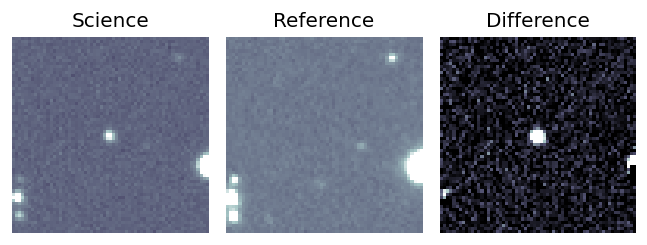
2. ZTF25abmrjnm (Afterglow?) [Back to Top] [Share] [Trigger Swift] [Fritz ] [Lasair ]RA, Dec: 291.563, 4.26888 19h26m15.12s, 4d16m7.96sGalactic (l, b): 40.73346, -5.75983 ext(g-r) = 0.59PS1: 1 source in 3 arcsec Closest: d = 2.92 arcsec photoz=0.42+/-0.00 peak abs mag = -24.60
3. ZTF25abmtiec (Afterglow?) [Back to Top] [Share] [Trigger Swift] [Fritz ] [Lasair ]RA, Dec: 350.01943, 16.28415 23h20m4.66s, 16d17m2.96sGalactic (l, b): 93.22098, -41.25742 ext(g-r) = 0.042LegacySurvey: 1 sources in 3 arcsec Closest: d = 2.24 arcsec, 352.6 deg (east of north) photoz=0.85 (68% bounds 0.35, 1.22), type=REX peak abs mag = -25.03 (68% bounds -22.72, -26.01) Consistent with synchrotron, g-r>0!
4. ZTF25abmuhnc (FBOT?) [Back to Top] [Share] [Trigger Swift] [Fritz ] [Lasair ]RA, Dec: 350.45528, 39.98966 23h21m49.27s, 39d59m22.76sGalactic (l, b): 104.8607, -19.71653 ext(g-r) = 0.152PS1: 1 source in 3 arcsec Closest: d = 1.03 arcsec photoz=0.43+/-0.00 peak abs mag = -22.86
5. ZTF25abmurpc (FBOT?) [Back to Top] [Share] [Trigger Swift] [Fritz ] [Lasair ]RA, Dec: 333.62982, 40.81049 22h14m31.16s, 40d48m37.78sGalactic (l, b): 93.51732, -12.931 ext(g-r) = 0.158peak abs mag = -20.22 PS1: 1 source in 3 arcsec Closest: d = 0.15 arcsec photoz=0.09+/-0.16 peak abs mag = -18.55 Consistent with synchrotron, g-r>0!
6. ZTF25abmvvxh (FBOT?) [Back to Top] [Share] [Trigger Swift] [Fritz ] [Lasair ]RA, Dec: 358.79747, 26.45003 23h55m11.39s, 26d27m0.12sGalactic (l, b): 107.58131, -34.73946 ext(g-r) = 0.045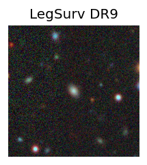 peak abs mag = -20.43 LegacySurvey: 1 sources in 3 arcsec Closest: d = 0.09 arcsec, 176.3 deg (east of north) photoz=0.18 (68% bounds 0.16, 0.2), type=SER peak abs mag = -19.86 (68% bounds -19.53, -20.14) Consistent with synchrotron, g-r>0!
7. ZTF25abmvzpv (FBOT?) [Back to Top] [Share] [Trigger Swift] [Fritz ] [Lasair ]RA, Dec: 341.8055, 4.69442 22h47m13.32s, 4d41m39.89sGalactic (l, b): 74.88569, -46.26629 ext(g-r) = 0.057peak abs mag = -19.13 LegacySurvey: 1 sources in 3 arcsec Closest: d = 0.29 arcsec, 82.9 deg (east of north) photoz=0.56 (68% bounds 0.34, 0.78), type=REX peak abs mag = -22.29 (68% bounds -20.98, -23.17)
8. ZTF25abmwpui (FBOT?) [Back to Top] [Share] [Trigger Swift] [Fritz ] [Lasair ]RA, Dec: 5.85705, -1.86118 0h23m25.69s, -1d-51m-40.26sGalactic (l, b): 106.87843, -63.85647 WARNING: -4.04 deg from ecliptic plane ext(g-r) = 0.047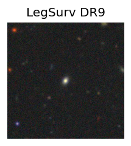 peak abs mag = -19.82 LegacySurvey: 1 sources in 3 arcsec Closest: d = 0.34 arcsec, 155.9 deg (east of north) photoz=0.09 (68% bounds 0.06, 0.13), type=SER peak abs mag = -18.45 (68% bounds -17.72, -19.29)
9. ZTF25abnebvm (FBOT?) [Back to Top] [Share] [Trigger Swift] [Fritz ] [Lasair ]RA, Dec: 351.18306, 8.55055 23h24m43.93s, 8d33m2.00sGalactic (l, b): 89.40841, -48.59584 ext(g-r) = 0.074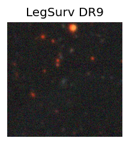 LegacySurvey: 1 sources in 3 arcsec Closest: d = 1.62 arcsec, 155.3 deg (east of north) photoz=0.24 (68% bounds 0.18, 0.36), type=EXP peak abs mag = -20.66 (68% bounds -19.9, -21.62) Consistent with synchrotron, g-r>0!
10. ZTF25abnqwkl (FBOT?) [Back to Top] [Share] [Trigger Swift] [Fritz ] [Lasair ]RA, Dec: 11.24476, 9.399 0h44m58.74s, 9d23m56.39sGalactic (l, b): 120.25697, -53.4392 WARNING: 4.2 deg from ecliptic plane ext(g-r) = 0.068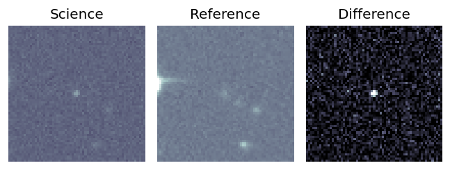peak abs mag = -21.66 LegacySurvey: 1 sources in 3 arcsec Closest: d = 0.19 arcsec, 124.5 deg (east of north) photoz=0.28 (68% bounds 0.26, 0.3), type=SER peak abs mag = -20.71 (68% bounds -20.55, -20.87)
11. ZTF25abnvstj (FBOT?) [Back to Top] [Share] [Trigger Swift] [Fritz ] [Lasair ]RA, Dec: 292.11864, 58.67084 19h28m28.47s, 58d40m15.02sGalactic (l, b): 90.1997, 18.36333 ext(g-r) = 0.067LegacySurvey: 1 sources in 3 arcsec Closest: d = 0.30 arcsec, 34.4 deg (east of north) photoz=0.16 (68% bounds 0.14, 0.19), type=SER peak abs mag = -19.38 (68% bounds -19.01, -19.74) 


 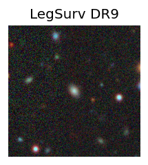
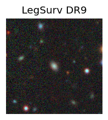


 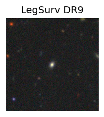
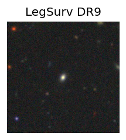

 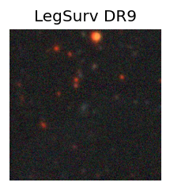
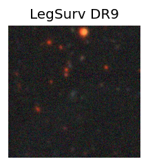